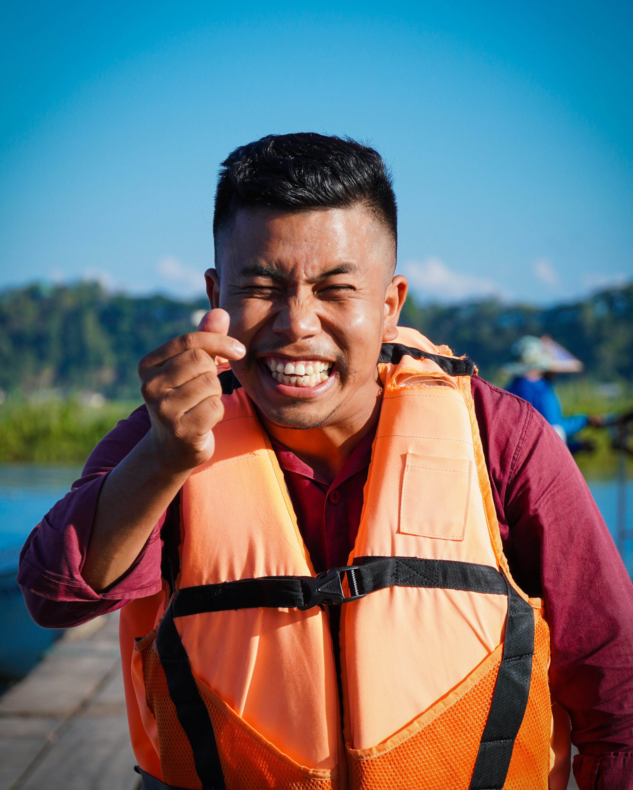

Our company purpose is to craft meaningful digital experiences that make life simpler and more
intuitive. Our mission is to continually develop reliable solutions that adapt to our customers’
needs and inspire long-term trust. Our creed is built on integrity, dedication, and a commitment to
learning as we grow. Our motto: “Shaping progress with honesty, innovation, and heart.
History
Our rafting company began as a small family project, born from a love of rivers and outdoor
adventure. Over the years,we expanded our routes and trained expert guides who share the same
passion for nature. What started as weekend trips soon grew into a trusted service known for
safety,
excitement, and unforgettable experiences. Today, we continue to welcome adventurers from all
backgrounds, helping them discover the thrill of the water.